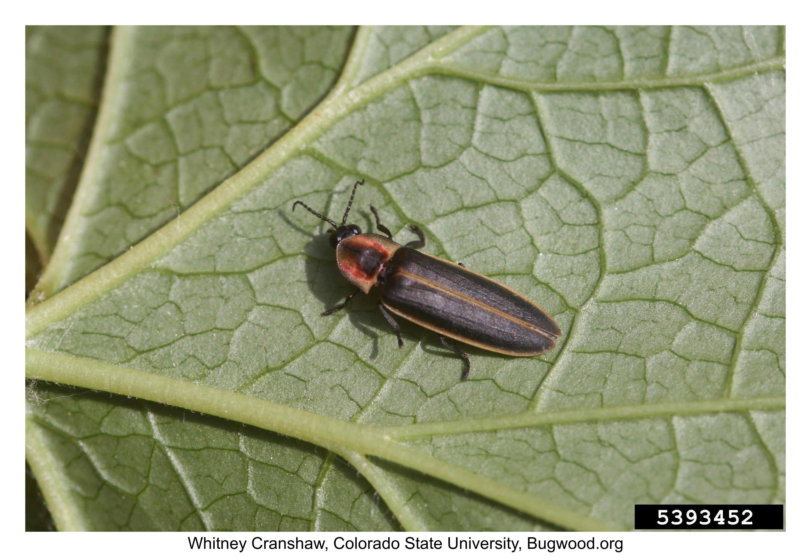
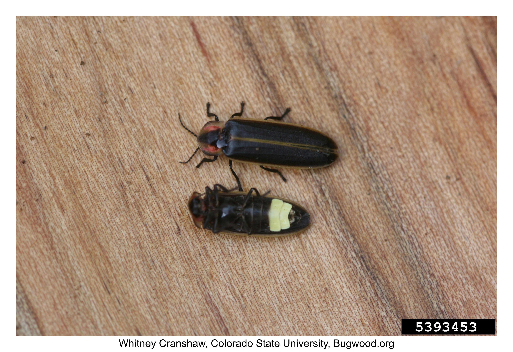
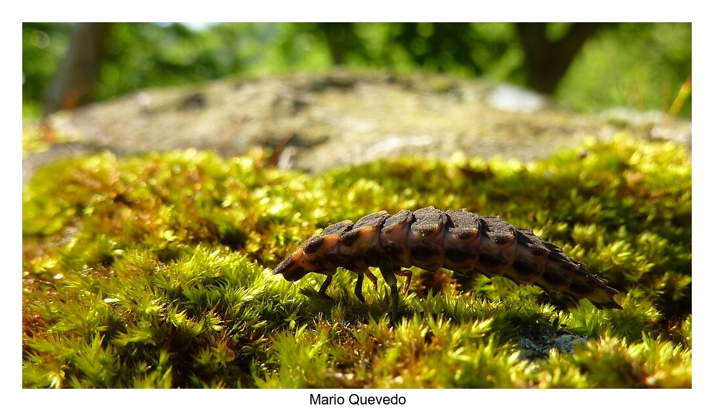

Beneficial insects
Assassin Bug
| Category | Benefical |
| Name | Assassin bug |
| Latin Name | many species (Pselliopus cinctus, Sinea spp, Zelus sp, etc.) |
| Pests Attacked | Generalist predators: Feed primarily on small insects, spiders, and various other arthropods; some species feed on seeds. |
| References | https://extensionentomology.tamu.edu/resources/management-guides/managing-soybean-insects-in-texas/soybean-insects-beneficial-insects/ |


Big-Eyed Bug
| Category | Benefical |
| Name | Big-eyed bug |
| Latin Name | Geocoris spp. |
| Pests Attacked | Generalist predator: Feeds primarily on small caterpillars, flea beetles, insect eggs, mites, thrips, whiteflies, and other true bugs. |
| References | https://extensionentomology.tamu.edu/resources/management-guides/managing-soybean-insects-in-texas/soybean-insects-beneficial-insects/ |


Braconid Wasps
| Category | Benefical |
| Name | Braconid wasps |
| Latin Name | Braconidae family |
| Pests Attacked | Larvae are parasitoids of aphids, beetle larvae, caterpillars, and other insects. |
| References | https://extensionentomology.tamu.edu/resources/management-guides/managing-soybean-insects-in-texas/soybean-insects-beneficial-insects/ |


Brown Lacewing
| Category | Benefical |
| Name | Brown lacewing |
| Latin Name | Hemerobius spp., Sympherobius spp., Micromus sp. other Hemerobiidae |
| Pests Attacked | Generalist predator: Feeds primarily on aphids, small caterpillars, insect eggs, leafhoppers, mealybugs, mites, psyllids, thrips, and whiteflies. |
| References | https://extensionentomology.tamu.edu/resources/management-guides/managing-soybean-insects-in-texas/soybean-insects-beneficial-insects/ |


Carabid Ground Beetle
| Category | Benefical |
| Name | Carabid ground beetle |
| Alternative Name | Ground beetle |
| Latin Name | many species (Pterostichus melanarius, Cicindela punctulata, Harpalus pensylvanicus, etc.) |
| Pests Attacked | Feeds on a variety of soybean pests and weed seed. |
| References | https://extension.psu.edu/ground-and-tiger-beetles-coleoptera-carabidae#:~:text=Carabid%20beetles%20can%20have%20beneficial,costs%20associated%20with%20pest%20controls. |


Damsel Bug
| Category | Benefical |
| Name | Damsel bug |
| Latin Name | Nabis spp. |
| Pests Attacked | Feeds on pests like corn earworm, soybean looper, and green cloverworm. |
| References | https://www.uky.edu/Ag/CritterFiles/casefile/insects/bugs/damsel/damsel.htm#:~:text=Damsel%20bugs%20are%20not%20pests,soybean%20looper%2C%20and%20green%20cloverworm. |


Firefly
| Category | Benefical |
| Name | Firefly |
| Alternative Name | Lightening bug |
| Latin Name | Photuris pennsylvanica |
| Pests Attacked | Feeds on slugs and snails. |
| References | https://sites.psu.edu/frost/2016/05/12/insects-of-the-statespennsylvania/ |



Green Lacewing
| Category | Benefical |
| Name | Green lacewing |
| Latin Name | Chrysoperla spp. |
| Pests Attacked | Feeds on aphids, mites, mealybugs, and scales. |
| References | https://extension.psu.edu/programs/master-gardener/counties/york/native-plants/fact-sheets/beneficial-insects-in-the-garden#:~:text=Green%20lacewings%20are%20beneficial%20and,are%20known%20as%20aphid%20lions. https://extension.psu.edu/promoting-beneficial-insects-in-the-landscape-lacewings |


Hover Fly
| Category | Benefical |
| Name | Hover fly |
| Alternative Name | Syrphid fly, Flower fly |
| Latin Name | Syrphidae family |
| Pests Attacked | Feeds on aphids, thrips scales, and caterpillars. |
| References | https://aggie-horticulture.tamu.edu/galveston/beneficials/beneficial-28_hover_or_syrphid_flies.htm |


Ichneumonid Wasps
| Category | Benefical |
| Name | Ichneumonid wasps |
| Alternative Name | Ichneumon wasp, Darwin wasp |
| Latin Name | Ichneumonidae family |
| Pests Attacked | Larvae are parasitoids (develop within another insect and eventually kill it) of beetle larvae, caterpillars, and other insects. |
| References | https://extensionentomology.tamu.edu/resources/management-guides/managing-soybean-insects-in-texas/soybean-insects-beneficial-insects/ |


Lady Beetle
| Category | Benefical |
| Name | Lady beetle |
| Alternative Name | Multicolored Asian lady beetle |
| Latin Name | Harmonia axyridis |
| Pests Attacked | Feeds on aphids and scales. |
| References | https://extension.psu.edu/multicolored-asian-lady-beetle-ladybug |


Minute Pirate Bug
| Category | Benefical |
| Name | Minute pirate bug |
| Alternative Name | Insidious flower bug |
| Latin Name | Xylocoris galactinus, Orius spp. |
| Pests Attacked | Generalist predator: Feeds on aphids, small caterpillars, insect eggs, leafhopper nymphs, scale insects, spider mites, thrips, and whiteflies. |
| References | https://extensionentomology.tamu.edu/resources/management-guides/managing-soybean-insects-in-texas/soybean-insects-beneficial-insects/ |


Praying Mantis
| Category | Benefical |
| Name | Praying mantis |
| Latin Name | Tenodera sinensis, T. angustipennis, Mantis religiosa, Stagmomantis spp., etc |
| Pests Attacked | Feeds on flies, beetles, and moths |
| References | https://aggie-horticulture.tamu.edu/galveston/beneficials/beneficial-20_mantid_praying_mantis.htm https://extension.psu.edu/programs/master-gardener/counties/northampton/news/2018/praying-mantid-facts#:~:text=There%20are%20four%20species%20in,more%20common%20in%20the%20south. |


Predatory Mite
| Category | Benefical |
| Name | Predatory mite |
| Latin Name | Neoseiulus californicus |
| Pests Attacked | Feeds on pest mite species, like spider mites. Sometimes small insects, like thrips. |
| References | https://soybeans.ces.ncsu.edu/soybean-beneficial-insects/predators-in-soybeans/ |

Spined Soldier Bug
| Category | Benefical |
| Name | Spined soldier bug |
| Alternative Name | Soldier bug |
| Latin Name | Podisus maculiventris |
| Pests Attacked | Generalist predator that feeds on beetle larvae, true bug nymphs, and caterpillars. May be confused with stink bug pests. |
| References | https://soybeans.ces.ncsu.edu/soybean-beneficial-insects/predators-in-soybeans/ |


Tachinid Flies
| Category | Benefical |
| Name | Tachinid flies |
| Alternative Name | Parasitic flies |
| Latin Name | Tachinidae family |
| Pests Attacked | Larvae are internal parasitoids of beetle larvae, caterpillars, grasshoppers, and other insects. |
| References | https://extensionentomology.tamu.edu/resources/management-guides/managing-soybean-insects-in-texas/soybean-insects-beneficial-insects/ |


Wolf Spider
| Category | Benefical |
| Name | Wolf spider |
| Alternative Name | Lycosid wolf spider |
| Latin Name | Lycosidae family (genera: Hogna, Tigrosa, etc.) |
| Pests Attacked | Feeds on herbivorous insects like Orthoptera, Homoptera, Hemiptera, Diptera, and Coleoptera. |
| References | https://www.walterreeves.com/uploads/pdf/spiderwheatstraw.pdf |